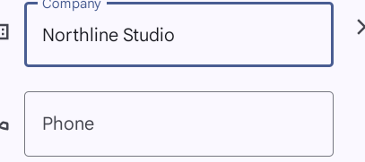

Systems research · Nikit Phadke · November 2026
Forking Android from a saved checkpoint
How long does it take to branch an Android task and verify the child’s first action? Six fresh children restored the same unsaved Contacts draft on an M1 Pro. Median time to a verified tap was 1.233 s.

Problem
An Android agent has entered a name and company in a contact editor. A trainer wants to compare two next actions from that exact moment. Replaying the prefix takes time, and a new launch must reproduce the unsaved form and its focus.
DroidFork saves that intermediate state once. Each branch must recover the draft in a fresh emulator process, accept a touchscreen action and return evidence of its effect. The question is how much time elapses between requesting the branch and verifying that first action.
Bottlenecks
An earlier two-vCPU request took 3.490 s. Most of that interval elapsed after the guest connected.
Emulator startup
Loading the graphics library took about 242 ms. A stack sample traced work to macOS resolving symbols. Loading the named snapshot took another 134 ms.
Observing the action
In an instrumented replay, Android reported the gesture complete 302 ms after its observer began handling the request. The observer found Phone focused at 874 ms. Screenshot capture and encoding continued until 2.090 s on that guest clock.
System design
DroidFork combines a privately mapped Android checkpoint with a host-side check of the first rendered action. It prepares shared state once and creates each child on request.
Prepare the source checkpoint
Save the Android VM with the draft open. An offline exporter puts its RAM pages in guest-address order and binds the layout to the saved snapshot index.
Create the child on demand
APFS clones supply private child disks. A modified emulator starts a new process and maps the saved RAM privately so child writes stay local. Relinking the renderer cut the observed repeat library load from about 242 ms to 5 ms. A decompressed SDK kernel and a single ADB executable probe also reduce work during launch.
Read the result from Android and the renderer
The host injects the touchscreen event. The guest returns the live accessibility tree, while the host captures the emulator framebuffer. This removes guest-side PNG encoding from the measured path and preserves the visible-state check.
Experimental method
The host was an eight-core M1 Pro with 16 GiB RAM. The Android 15 guest had 2.5 GiB RAM and a 480 × 854 display. The paired control used two vCPUs and software rendering. The native touchscreen series used a separately saved four-vCPU checkpoint and the M1 Pro GPU.
The timer starts before creating the control listener, private disks and process. The guest returns a volatile checkpoint identifier. A pass requires the expected draft in the full live hierarchy, Phone focused, and a rendered image showing its active underline with Company inactive. The timer stops after host verification.


Results
The same-checkpoint comparison and the fastest configuration answer different questions.
Matched two-vCPU comparison
Five pairs used the same immutable checkpoint, alternating which path ran first. Three of the four complete pairs favored the optimized path. In the fourth, the optimized request took 2.793 s longer.
| Path | Passed | Median |
|---|---|---|
| Control | 5 / 5 | 3.271 s |
| Optimized | 4 / 5 | 2.544 s |
Four-vCPU native touchscreen series
All six repeat launches passed. The median was 1.233 s, with a range of 1.145–1.328 s. The minimum remained 145 ms above the one-second target.
View the six requests in execution order
- 1.328 s
- 1.252 s
- 1.154 s
- 1.271 s
- 1.215 s
- 1.145 s
Fastest request
On this child the hierarchy arrived before one second. Acquiring the rendered frame and finishing verification took another 265 ms.
- Private disks and new process
- Guest connects
- Touchscreen tap sent
- Android tree confirms Phone focus
- Rendered underline verified
Limitations
The experiment measures one local child, one host and one transition in an offline Contacts task. The source checkpoint and its RAM image were already prepared. Repeat launches used ordinary host caches. A first launch of the newly staged executable in the companion gesture series took 14.511 s.
Concurrent branch throughput, checkpoint preparation costs over a full training job, other applications and policy learning outcomes require separate experiments. Changing both the CPU count and GPU backend also prevents attributing the four-vCPU minimum to either factor alone.
72-second film
Research film
Follow one unsaved Contacts draft through the training problem, the emulator changes, and a verified tap. The film shows where the earlier 3.490 s went and how the two-vCPU and four-vCPU trials performed.
Download MP4 ↓Research artifacts
Rebuild the emulator to repeat the experiment, or check the published timings and frame hashes directly from the release.